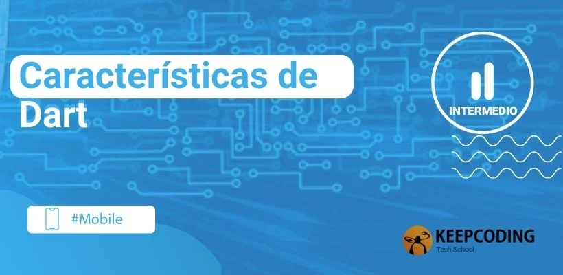

Caracteristicas
DAMOS LA BIENVENIDA A LAS CARACTERISTICAS DE DART
Dart, siendo un lenguaje de programación contemporáneo, ha sido dotado de características que lo hacen destacar en el escenario de desarrollo actual. Ya sea que estés buscando un lenguaje para desarrollar aplicaciones web, móviles o de escritorio, Dart tiene algo especial que ofrecer. A continuación, exploramos las características más resaltantes:
Tipado fuerte y seguro
Dart es un lenguaje de programación de tipado fuerte, lo que significa que cada variable tiene un tipo específico asociado y no se puede cambiar dinámicamente. Esta característica, combinada con la herramienta de análisis de Dart, ayuda a los desarrolladores a detectar y corregir errores en tiempo de compilación, en lugar de enfrentar sorpresas en tiempo de ejecución.
Soporte para programación orientada a objetos y funcional
Dart combina lo mejor de ambos mundos. Como lenguaje orientado a objetos, Dart facilita la organización del código en clases, objetos y herencia. Pero no se detiene ahí; también incorpora características de programación funcional, permitiendo a los desarrolladores trabajar con funciones como objetos de primera clase, aprovechando las ventajas de la inmutabilidad y la composición funcional.
Hot Reload: el poder de ver cambios al instante
Una de las características favoritas de los desarrolladores que trabajan con Dart (especialmente en el contexto de Flutter) es el "Hot Reload". Esta función permite que, al realizar un cambio en el código, se refleje instantáneamente en la aplicación en ejecución, sin tener que reiniciarla por completo. Esto no solo acelera el proceso de desarrollo, sino que también permite una iteración más eficiente y una experiencia de desarrollo más fluida.
Flexibilidad: ejecución en múltiples plataformas
Dart no se limita a una sola plataforma. A través de su compilador, Dart puede convertir el código fuente en código nativo para múltiples sistemas operativos, así como en código JavaScript para ejecutarse en navegadores web. Esto lo convierte en una herramienta poderosa para desarrolladores que buscan crear soluciones multiplataforma con un único código base.
Las características clave de Dart reflejan su naturaleza versátil y su capacidad para adaptarse a diferentes necesidades de desarrollo. En el ecosistema actual de la programación, donde la eficiencia y la adaptabilidad son esenciales, Dart emerge como un contendiente sólido que merece la atención de todo desarrollador.